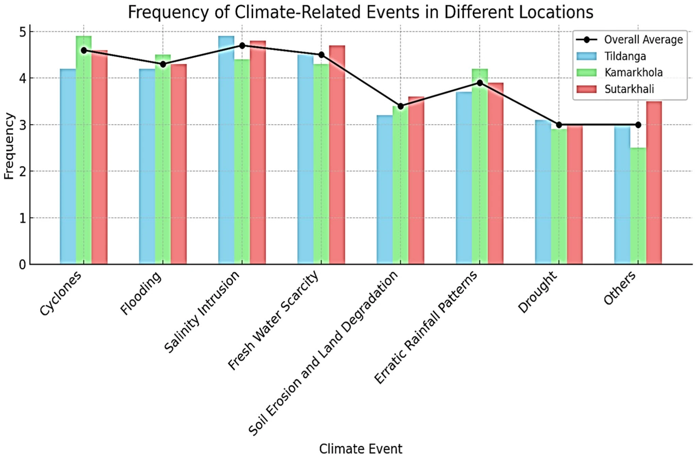

Climate-induced risks, adaptation, and mitigation responses: A comparative study on climate-stressed coastal communities
Climate risks are local—and so are adaptation strategies.
Key findings
- Comparisons across Tildanga, Kamarkhola and Sutarkhali show differing perceived pressures from cyclones, flooding and salinity.
- Households reported rainwater harvesting, salt-tolerant cropping, elevated housing and other adaptation measures.
- Financial, technical and institutional constraints limited the reach and sustainability of responses.
